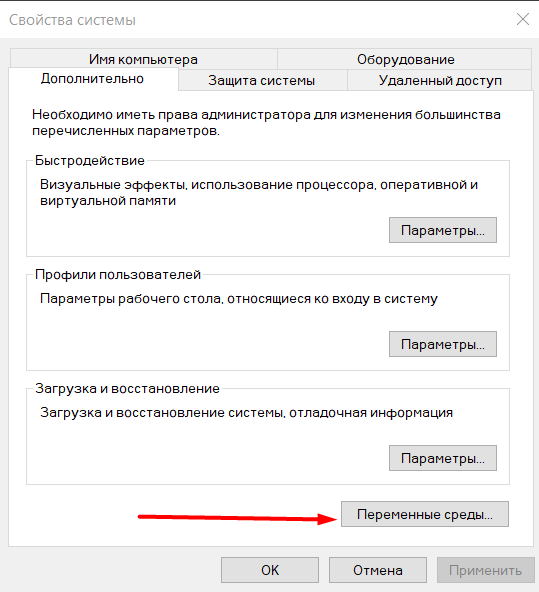

Скачать архив (Zip)
x86 — версия для 32-битной ОС, x64 — 64-битная версия. Из Thread Safe и Non Thread Safe выбираем Thread Safe (c поддержкой многопоточности).

Как должно выглядеть:

- Открываем Панель управления->Система->Дополнительные параметры системы->Переменные среды

- Выбераем переменную Path и нажимаем Изменить
 - И создаем путь к нашему распакованному архиву

- Открываем Командную строку
- Прописываем php -v